Interviewees use three or more platforms to learn for work
Śruti
One place to learn, and to see where your learning time went
Śruti brings videos, podcasts and live streams into a single workspace for corporate professionals, with a stats view that shows what you’ve learned and how long it took.
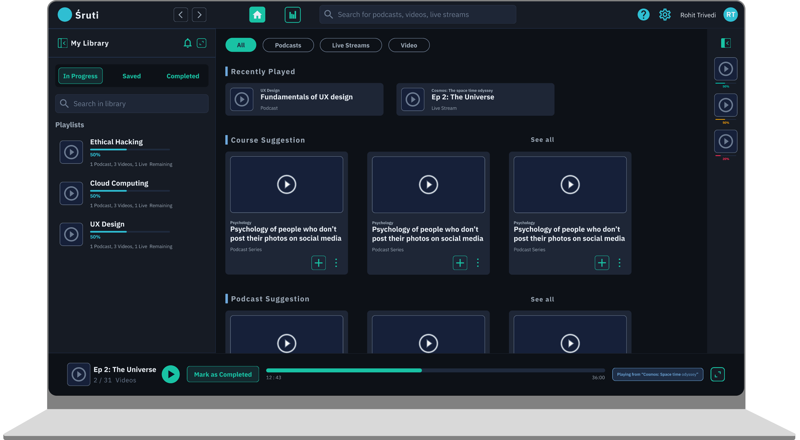
Professionals learn from five places and remember none of them
Employees have to keep up with new tools and concepts, so they learn from YouTube, courses, podcasts and live sessions. They end up juggling tabs, losing track of where they learned something, and not knowing how much time it took.
Average time lost per session switching tabs and finding where they left off
Could not say how many hours they spent learning last month
I really want to track and keep up my learning because it is scattered across multiple platforms it is difficult to keep up with the time line I have decided of it.Lokesh, Full Stack Developer
Each platform does one thing well. None shows the whole picture.
| Video | Podcast | Live | Tracks progress | Time stats across formats | |
|---|---|---|---|---|---|
| YouTube | Yes | Partial | Yes | No | No |
| Coursera | Yes | No | No | Yes | No |
| Spotify | No | Yes | No | Partial | No |
| Twitch | No | No | Yes | No | No |
| Śruti | Yes | Yes | Yes | Yes | Yes |
The home screen, annotated
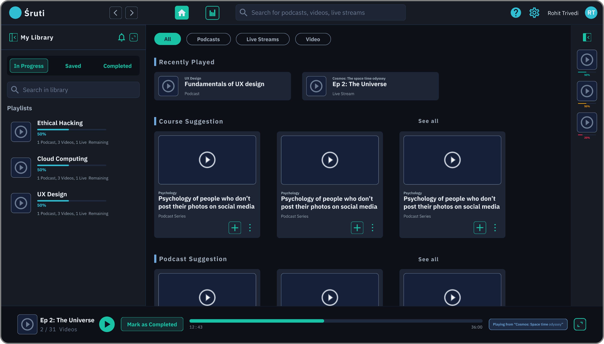
From wireframes to the final design
The approch of just combining all the learning types into one platform to making it an experience by integrating playlist feature
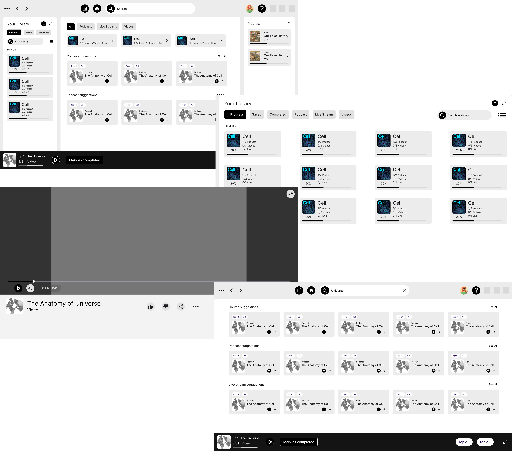
The stats view answers one question: where did my week go?
The capsule chart stacks capsules coloured by format, with lines running to totals on the right. This makes it possible to compare the shape of a week with the total time spent learning.
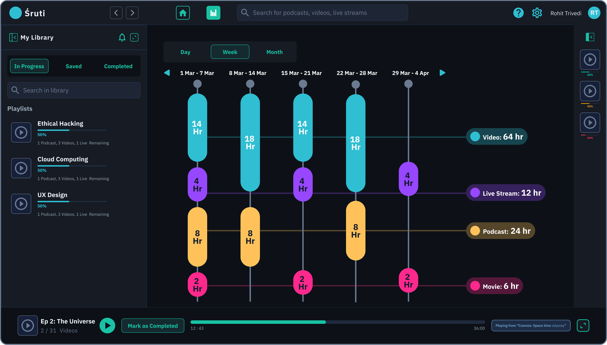
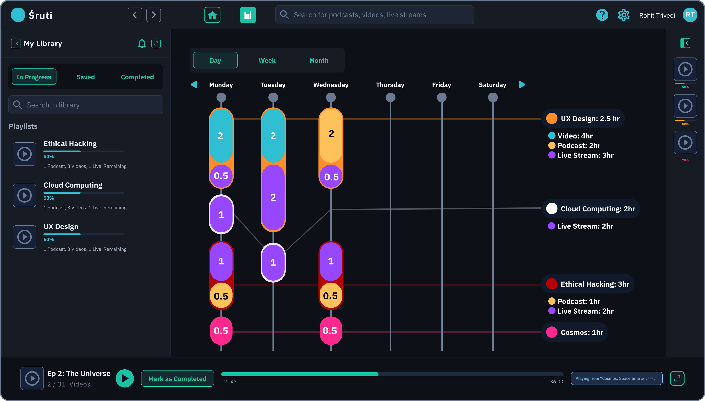
Three decisions that shaped the product
- Problem
- Learners lose their place when content is split by format.
- Solution
- All the content is in one place, organised by topic and filtered by format.
- Problem
- Playback should survive navigation.
- Solution
- A persistent bottom player bar.
- Problem
- Hours alone don’t show learning habits.
- Solution
- Capsule chart by format and topic.
Design system
Documented in a way that makes design implementable intuitively by semantic tokens grouped by role, a layering model, a type and spacing scale, a grid, and components with their states mapped to tokens. Tokens are named by role ($text-secondary), not by colour, so the theme can change without touching components.
Colour
$background#0B1220
$layer-01#111A2B
$layer-02#1a2740, proposed, for modals and menus
| Group | Token | Value | Role |
|---|---|---|---|
| Background | $background | #0B1220 | Page canvas. The theme is named by this value, as in Carbon. |
| Layer | $layer-01 | #111A2B | Main panel and cards |
| $layer-side | #0F1726 | Side panel, player bar | |
| $border-subtle | #22304A | Dividers and card outlines | |
| Text | $text-primary | #E6EDF5 | Headings and body |
| $text-secondary | #9AA7B5 | Supporting text | |
| $text-helper | #8593A8 | Captions and metadata. Revised from #6B7A90 (see accessibility) | |
| $text-on-color | #0B1220 | Text on teal buttons | |
| Interactive | $interactive | #19C2A4 | Primary actions, active tab, progress |
| $interactive-hover | #2AD4B4 | Hover state of primary | |
| Brand | $brand-accent | #6D28D9 | Live streams, annotations |
| Support | $support-error | #FF2D55 | Errors |
| $support-success | #00C8B3 | Completed state | |
| Chart | $chart-01 | #F59E0B | Podcast |
| $chart-02 | #3C8CFF | Chart accent | |
| $chart-03 | #FF298D | Movie | |
| $chart-04 | #FFFFFF | Chart accent | |
| $chart-05 | #B40202 | Chart accent |
Typography
| Token | Live specimen | Face | Size | Use |
|---|---|---|---|---|
| heading-04 | Learn in one place | IBM Plex Serif 600 | 24px | Main headings |
| heading-03 | Learn in one place | IBM Plex Sans 500 | 20px | Section headings |
| body-02 | Learn in one place | IBM Plex Sans 400 | 16px | Body copy (was 18px) |
| body-01 | Learn in one place | IBM Plex Sans 500 | 14px | Card titles, controls |
| label-01 | Learn in one place | IBM Plex Sans 400 | 12px | Captions and footnotes (was 8px and 6px) |
Spacing
$spacing-014
$spacing-028
$spacing-0312
$spacing-0416
$spacing-0524
$spacing-0632
$spacing-0748
Icons
Layout grid
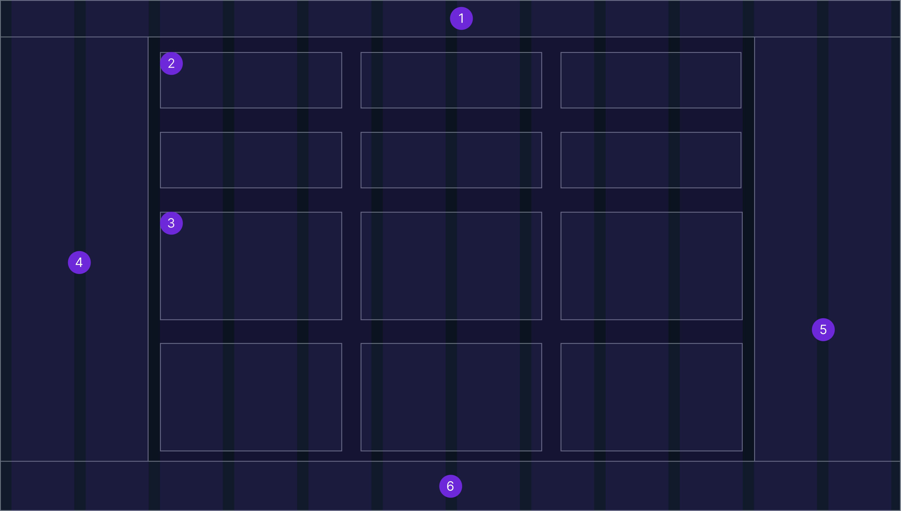
Components
Buttons
Tabs
VideoPodcastLive
All formatsVideoPodcast
Progress
24:18 / 38:42
42%
Cards
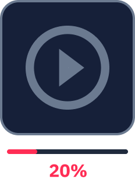
Input
⌕ Search your library
Accessibility
Contrast was checked against the dark theme and the interactive states. The failing combinations remain visible here so they are not accidentally reused.
| Pair | Ratio | Requirement |
|---|---|---|
| $text-primary on $background | 15.87:1 | pass |
| $text-secondary on $background | 7.64:1 | pass |
| old muted #6B7A90 on $background | 4.29:1 | fails |
| old muted on $layer-01 | 3.99:1 | fails |
| new $text-helper #8593A8 on $layer-01 | 5.58:1 | pass |
| $text-on-color on $interactive | 8.40:1 | pass |
| on $interactive-hover | 10.22:1 | pass |
| $interactive on $background | 8.40:1 (UI 3:1) | pass |
| $support-error on $background | 5.13:1 | pass |
| $brand-accent on $background | 2.64:1 (UI 3:1) | fails |
See it working
A short walkthrough of the core flow: add to playlist, watch, mark complete, check weekly stats.
Testing the flow with a cognitive walkthrough
A cognitive walkthrough checks whether a new user can work out how to carry out a task in a system, one step at a time. Two peer evaluators tested the Śruti wireframes, before the final visual design, in online sessions on desktop. Below: the five tasks, what happened at each step, and the screen-level issues that came out of it.
- 1Define the basic navigation of the system
- 2Define the main functionalities
- 3Make task flows
- 4Walk through with peers online
- 5Collect results and feedback
Evaluators
- Evaluator
- Shreya Deshpande
- Device
- Desktop
- Date
- 24.11.2022
- Mode
- Online
- Evaluator
- Vaibhavi Hada
- Device
- Desktop
- Date
- 24.11.2022
- Mode
- Online
Results
17 of 20
steps passed across the five tasks
4 of 5
tasks passed every step
5
screen-level issues found
| Task | Right result | Correct action found | Action linked to goal | Progress visible |
|---|---|---|---|---|
| 1Continue watching the course or video you left | Yes | Yes | Yes | Yes |
| 2Check how many videos are completed from your playlist | No | Yes | No | No |
| 3Search for something and add it to your library | Yes | Yes | Yes | Yes |
| 4Check your progress in a course | Yes | Yes | Yes | Yes |
| 5See how much time you spent on podcasts | Yes | Yes | Yes | Yes |
What happened at each task
1Continue watching the course or video you leftYes4 of 4 steps
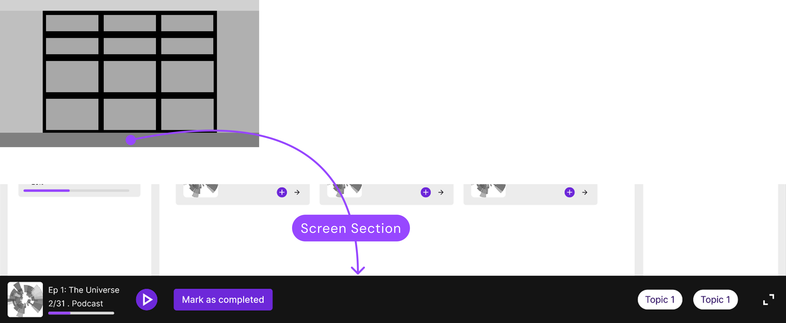
Was the user able to achieve the right result?Yes
She easily navigated to the floating bottom section that provided quick access to resume her learning.
Was the user able to identify the correct action that is available?Yes
She recognised it as the correct option to resume the video or podcast and catch up on her learning.
Was the user able to associate the correct action with the result they’re trying to achieve?Yes
Because the progress bar floats at the bottom, it clearly signals an incomplete action and draws attention to the video or podcast that still needs to be finished.
After the action was performed, was the user able to see that progress was made toward the goal?Yes
After she clicked the bottom panel, a pop-up opened on the same screen and continued playing the video or podcast, completing her goal.
2Check how many videos are completed from your playlistNo1 of 4 steps
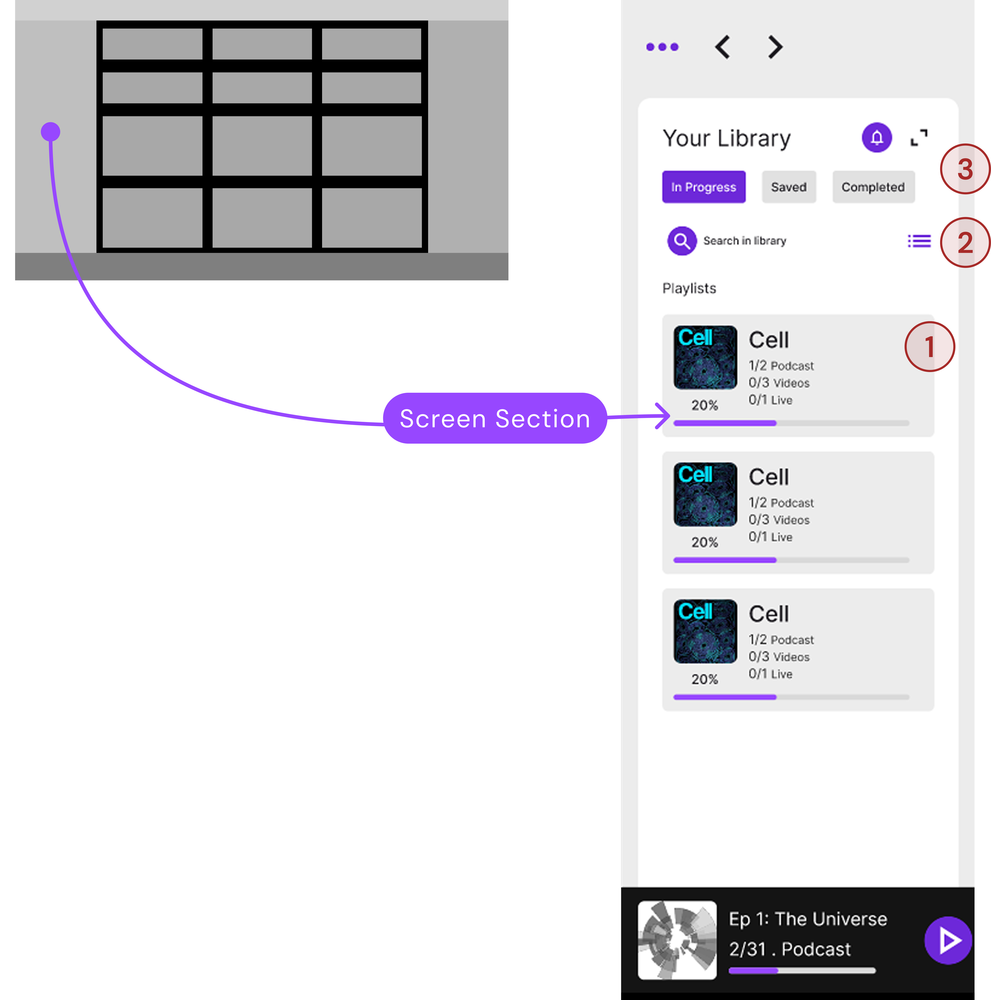
Was the user able to achieve the right result?No
She navigated to the library but was unable to figure out which option shows the completed videos and podcasts.
Was the user able to identify the correct action that is available?Yes
She navigated intuitively to the library, the correct section for finding completed videos.
Was the user able to associate the correct action with the result they’re trying to achieve?No
She clicked the Completed tab in the library panel, which is not the right option: that tab is meant to filter completed playlists.
After the action was performed, was the user able to see that progress was made toward the goal?No
After a few attempts and some guidance she opened her playlist, but could not recognise the information relevant to the task.
3Search for something and add it to your libraryYes4 of 4 steps
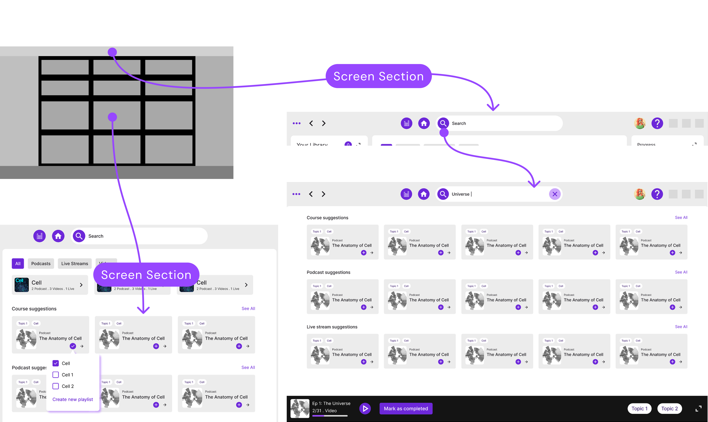
Was the user able to achieve the right result?Yes
She easily navigated to the top section with the search bar, which indicated she could search for new podcasts or videos.
Was the user able to identify the correct action that is available?Yes
She recognised the search bar at first glance, fulfilling its purpose of being placed at the top.
Was the user able to associate the correct action with the result they’re trying to achieve?Yes
After entering keywords, she intuitively added the item to her playlist using the plus icon on the card, which opened a dialog to choose an existing playlist or create a new one.
After the action was performed, was the user able to see that progress was made toward the goal?Yes
She could also add it from the main screen, which improves discoverability. Once added, it would appear in the library (functionality still to be implemented).
4Check your progress in a courseYes4 of 4 steps
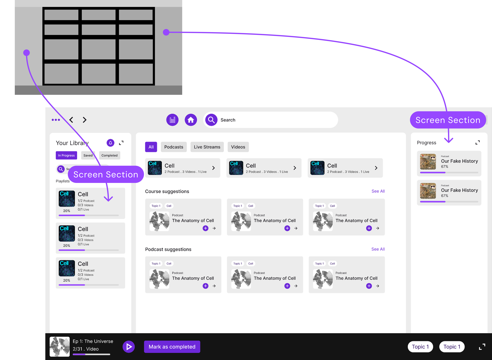
Was the user able to achieve the right result?Yes
She easily navigated to the section with all her current course progress.
Was the user able to identify the correct action that is available?Yes
She recognised at first glance that it shows the progress of her courses.
Was the user able to associate the correct action with the result they’re trying to achieve?Yes
She recognised it intuitively at first glance.
After the action was performed, was the user able to see that progress was made toward the goal?Yes
She could tell the percentage of progress of all her courses at a glance.
5See how much time you spent on podcastsYes4 of 4 steps
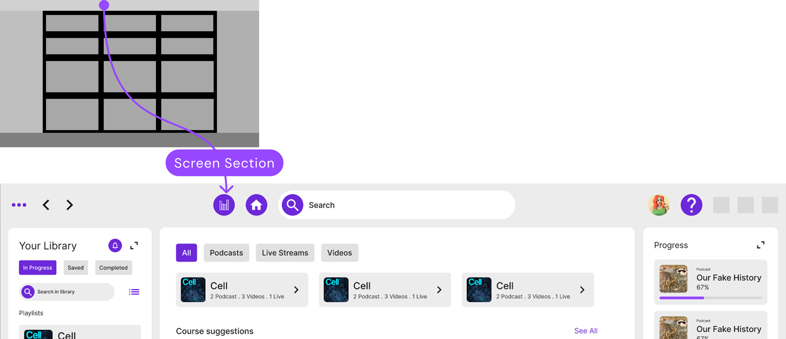
Was the user able to achieve the right result?Yes
She easily navigated to the top section for the stats option.
Was the user able to identify the correct action that is available?Yes
She recognised the stats icon and completed the task.
Was the user able to associate the correct action with the result they’re trying to achieve?Yes
She recognised the icon and associated its function with the task.
After the action was performed, was the user able to see that progress was made toward the goal?Yes
She could identify the time spent and so finished the task.
Screen-wise feedback
1
Playlist cards and video or podcast cards look alike
Evaluators could not tell a playlist card from a video or podcast card.
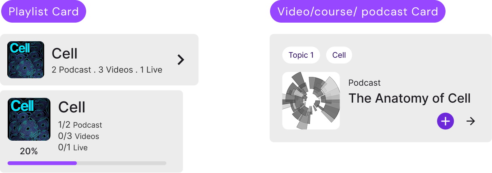
2
The library filters read as universal
They hinted at filtering everything, but were designed for playlists only.
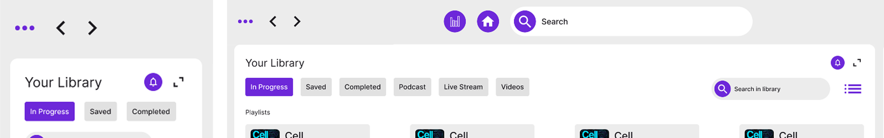
3
The collapse button doesn’t say what it does
Its function isn’t conveyed, and its placement is odd.
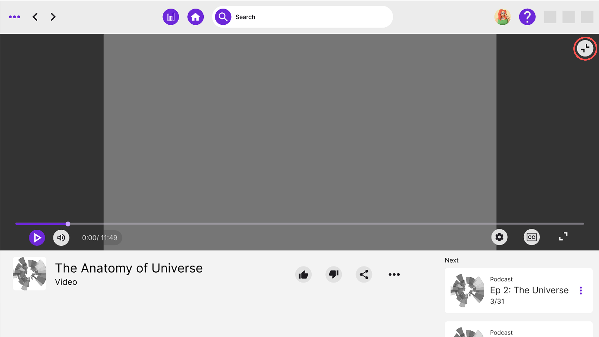
4
The notification icon doesn’t signal its purpose or presence
Nothing about it conveys what it does or that it is there.
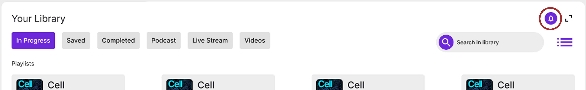
5
The filter option goes unnoticed
The filter control at the right of the library bar was not noticed.
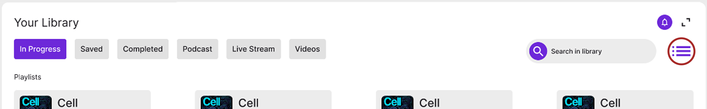
Design change
Keeping the card style only for learning material, and giving playlist are other card like features a lift style, so that they are look diffrent at the same time feel intuitive
Outcome and what I’d do next
What I learned
Very simple solution can be hard to implement depending on what we are combining to reduce what cognitive load
Next steps
Conduct full-fledged testing with real users(i.e. corporate learners) and also come up with mobile version of this interface